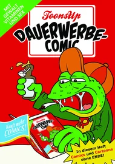
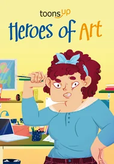
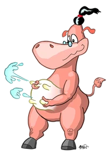
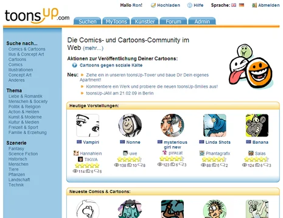
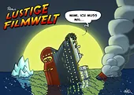
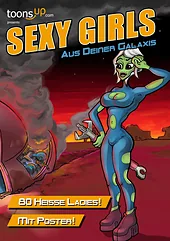
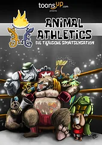

cartoons.de
cartoons.deÜber mich

Ich bin Ronald Markworth, gebürtiger Berliner, Cartoonist und Illustrator. Zeichnen gehörte schon immer zu meinen größten Leidenschaften. Beruflich komme ich aus der Informatik, hier auf roncartoons.de zeige ich, was nebenbei und für Auftraggeber entstanden ist.
Angefangen hat alles 2004 mit Rolli, dem Regenwurm. Und als Filmfan kamen sehr schnell meine Film-Parodien hinzu.
Auftragsarbeiten
Rolli wurde sogar berühmt: Für den Auenerlebnispfad Jungaue in Ingelheim am Rhein habe ich Rolli in verschiedenen Posen gezeichnet. Wenn Sie auch ein Motiv, eine Figur oder eine Bildreihe für Ihr Projekt brauchen, besprechen wir das gerne: zum Kontakt.
Ich zeichne Cartoons, Comic-Strips und Illustrationen: für Bücher, Karten und Kalender, für Schulungsunterlagen und Präsentationen, als Maskottchen oder als Vorlage für T-Shirts, Tattoos und Gravuren.
toonsUp und ICOM
Zusammen mit meinem seit Kindertagen befreundeten Martin Sander („Made“) habe ich die Comic-Community toonsUp erfunden und programmiert. Am Anfang stand eine einfache Frage: Warum gibt es keine Seite, auf der Zeichner und Leser sich austauschen, wo jeder mit ein paar Klicks seine eigene Homepage anlegen kann und wo wirklich jeder mitmachen darf? Statt darauf zu warten, dass das irgendwann jemand anderes baut, haben wir es selbst getan. Gut ein Jahr Entwicklung später ging toonsUp Anfang November 2007 online.
Zuvor hatten wir nur eine handgeschriebene Webseite, den ComicZoo. Dort musste man alle Seiten von Hand schreiben und die Bilder per FTP hochladen. Eine Plattform, die allen diese Arbeit abnimmt, war eine tolle Vorstellung!
toonsUp ist kostenlos, werbefrei und mehrsprachig. Künstler müssen weder Provisionen zahlen noch Rechte abgeben, wenn über die Seite etwas zustande kommt. Ein Ort, an dem Comiczeichner, Cartoonisten und Illustratoren ihre Arbeiten zeigen, Rückmeldungen bekommen und sich austauschen. Im April 2015 wurde der Verein toonsUp e.V. gegründet, der die Gemeinschaft unterstützt hat.
Aktionen
Aus der Community heraus entstanden Aktionen und Projekte. Zur Wahl der „Miss Alien“ zeigten wir im September 2009 in der Berliner c-base eine Ausstellung mit Arbeiten von mehr als 50 Zeichnern, dazu erschienen Ende 2009 ein Comic-Heft und weitere Fanzines. Das war die Basis für weitere Aktionen und Hefte, die wir in Eigenregie organisiert und verlegt haben. Zwei davon: der Dauerwerbecomic („Comics und Cartoons ohne Ende!“) und das Heft Heroes of Art. Dazu die „Warmon Kow“, mein Beitrag zur Aktion War-Mon.



Heute
Seit 2024 wird toonsUp vom Interessenverband Comic e. V. (ICOM) betrieben. Dafür wurde toonsUp auch technisch komplett neu aufgebaut: von der alten Technik (JavaServer Pages) auf eine einfachere, besser wartbare (PHP). Der ICOM wurde 1981 gegründet und ist der Berufsverband für Comic, Cartoon, Illustration und Trickfilm in Deutschland. Er vergibt unter anderem den ICOM Independent Comic Preis und ist Mitveranstalter des Comic-Salons Erlangen. Dort bin ich seit 2008 regelmäßig vertreten.
Mehr dazu: toonsUp · Über den ICOM · ICOM bei Wikipedia

Diverses
Früher habe ich regelmäßig Cartoons für das Pranke-Magazin (pranke-forum.de) und Star-Wars-Strips für das Offizielle Star Wars Magazin gezeichnet (Dark Wars, Toon Wars; journal-of-the-whills.de). Dazu kamen Beiträge in der Straßenzeitung Bodo und im Magazin Leo. Als Fanzines habe ich bei toonsUp „Animal Athletics“ und „Sexy Girls aus Deiner Galaxis“ (Miss Alien) mit herausgegeben, außerdem erschien 2012 das Buch „Rons lustige Filmwelt“ mit meinen Film-Parodien.



Zusammenarbeit
Sie möchten ein Bild nutzen, einen Druck haben oder ein eigenes Motiv in Auftrag geben? Schreiben Sie mir über die Kontaktseite.